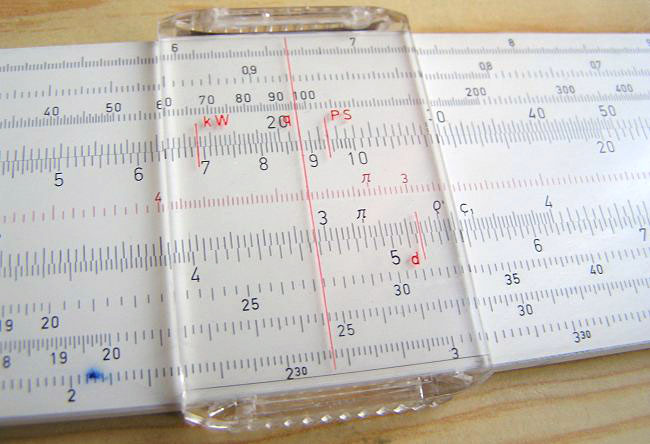
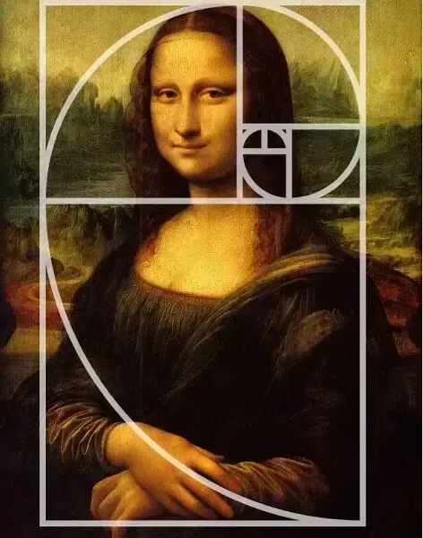

Para auxiliar na multiplicação, no final do século XVI, um matemático escocês chamado John Napier, que em 1614 publicou os Logaritmos, que é o expoente de um número (base), indicando a potência a que se deve elevá-lo para seobter, como resultado outro número.
Na concepção de Napier qualquer nú-mero pode ser representado desta forma, por exemplo, 100 é 102 e 23 é 101,36173. John Napier inventou um método diferente (não-logaritmo) de fazer multiplicações, que ficaram conhecidos como Bastões de Napier, ou Ossos de Napier, que só foram documentados entre 1614 à 1617. Os bastões de Napier eram um conjunto de 9 bastões, um para cada dígito, que

transformavam a multiplicação de dois números numa soma das tabuadas de cada dígito. Estes bastões faziam operações matemáticas fundamentais. Baseado nos logaritmos de Napier, William Oughtred, em 1622, na Inglaterra, inventou um dispositivo de cálculo que foi denominado círculos de proporção. Este dispositivo originou a régua de cálculo, sendo considerada como o primeiro computador analógico da histórica, por representar logaritmos em traços na régua e sua divisão e produto são obtidos através da adição e subtração de comprimentos.

